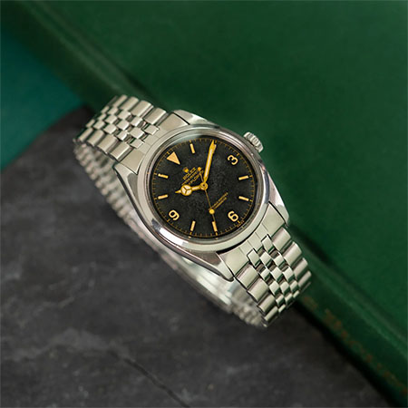

Product foto en basis info
Product info
Rolex Explorer 6610
Deze Rolex Explorer uit 1957 heeft een van de mooiste wijzerplaten die we ooit zijn tegengekomen. De wijzerplaat is gemaakt door middel van een galvanisch coatingproces, waarbij de wijzerplaten eerst werden gestempeld met een heldere coating om de tekst- en cijferring te definiëren, waarna een zwarte substantie werd aangebracht met behulp van een chemisch bindproces. Dit leidt tot een glanzend zwarte wijzerplaat met goudkleurige details. Het gebruik van radioactief radium in de wijzers en de uurmarkeringen heeft ervoor gezorgd dat de wijzerplaatcoating en verf zijn vervaagd, waardoor een prachtig vaag effect is ontstaan. Ondertussen zijn de radiumindexen en het lichtgevende materiaal in de wijzers verouderd tot een aangename romige kleur die goed past bij de vergulde details op de wijzerplaat. Het horloge verkeert in goede staat, zeker gezien de leeftijd en zeldzaamheid. De roestvrijstalen kast heeft dikke bandaanzetten en wordt geleverd met een gevouwen Jubilee-band.
€ 21.500
Extra foto's

Specificaties & eigenschappen
- Afmetingen Horlogekast
- 36 mm
- Kastmateriaal
- Roestvrij staal, origineel Rolex
- Wijzerplaat
- Zwart
- Glas
- Plexiglas
- Kaliber
- 1030
- Uurwerk
- Automatisch
- Referentie
- 6610
- Jaar
- 1957